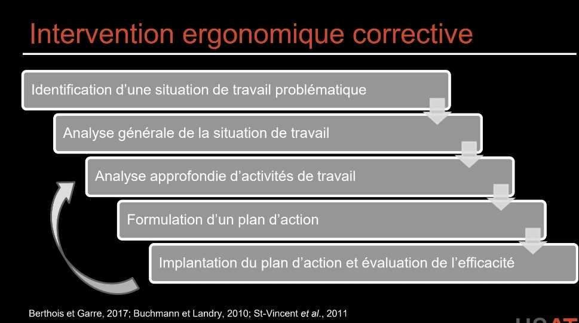

Intervention ergonomique
L'intervention ergonomique est une démarche structurée de résolution de problèmes visant à diagnostiquer les déterminants d'activités de travail problématiques, puis à mettre en œuvre des transformations adaptées. Elle se décline en deux grandes formes : corrective (intervenir sur l'existant) et de conception (anticiper sur un projet nouveau).
Table des matières
- Corrective versus conception
- Les cinq étapes
- Méthodes utilisées
- Posture de l'intervenant
- Application terrain
- Ressources
Corrective versus conception
| Type | Objet | Caractéristique |
|---|---|---|
| Corrective | Une situation de travail existante problématique | Démarche réactive, sur la base d'observation et d'analyse |
| De conception | Un projet de nouveau poste, équipement ou organisation | Démarche proactive, intégrée au processus de conception |
L'intervention corrective est la plus fréquente en milieu industriel. L'intervention de conception est plus puissante (elle prévient à la source) mais demande une intégration tôt dans le cycle projet.
Les cinq étapes
L'intervention ergonomique corrective se conceptualise comme un entonnoir : on part d'un constat large pour se concentrer progressivement sur les déterminants critiques de l'activité.

1. Identification d'une situation de travail problématique
- Réception de la demande du milieu (plaintes, statistiques d'absentéisme, accidents).
- Recherche de données existantes dans l'établissement (registre TMS, audiogrammes, fiches de risque).
- Production de nouvelles données objectives et subjectives (questionnaire nordique, observation préliminaire).
- Sélection d'une ou plusieurs situations de travail à prioriser.
2. Analyse générale de la situation
- Contextualiser la situation (environnement, tâches, organisation).
- Compréhension générale.
- Choix des activités à approfondir et des outils d'évaluation.
- Méthodes : observation et entretiens.
3. Analyse approfondie d'activités de travail
- Décrire les activités et identifier les déterminants.
- Combiner données objectives et subjectives
- Comment : observation outillée des activités et des contraintes (vidéo, mesures, grilles).
- Pourquoi : entretiens avec les travailleurs concernés.
- Représentativité des unités d'analyse (cycle court versus quart complet, jour calme versus jour de pointe).
4. Élaboration d'un plan d'action
- Formulation d'un pré-diagnostic : hypothèse de causalité reliant les résultats des étapes précédentes.
- Le pré-diagnostic oriente le plan d'action et sert à convaincre les dirigeants.
- Plan d'action ciblant les principaux déterminants des activités contraignantes.
- Co-construction des solutions avec les travailleurs.
5. Implantation du plan et évaluation
- Implication de plusieurs travailleurs du poste pour faciliter l'acceptation.
- Simulations possibles pour valider les solutions.
- Suivi obligatoire pour conclure l'intervention.
Méthodes utilisées
| Méthode | Quand l'utiliser |
|---|---|
| Observation directe | Toutes les étapes, surtout 2 et 3 |
| Observation outillée (vidéo, capteurs) | Étape 3 |
| Entretien individuel | Étapes 1, 2, 3 |
| Entretien collectif | Étapes 2, 4 |
| Outils d'évaluation ergonomique | Étape 1 |
| Analyse posturale | Étape 3 |
| Mesures physiologiques (FC, EMG) | Étape 3 (cas pointus) |
| Simulation | Étape 5 |
Posture de l'intervenant
L'intervenant ergonome doit maintenir plusieurs équilibres
- Rester à l'affût des pistes de solutions dès le début, sans précipiter le diagnostic.
- Combiner rigueur méthodologique et pragmatisme du terrain.
- Travailler en coordination avec les travailleurs, les superviseurs et la direction.
- Documenter pour permettre l'évaluation a posteriori.
La force d'une intervention réside dans la cohérence des résultats obtenus aux différentes étapes : un diagnostic crédible repose sur la convergence des observations, des entretiens et des mesures.
Application terrain
En contexte minier, l'intervention ergonomique présente plusieurs spécificités.
- Accès terrain : pénétrer sous terre requiert formation, EPI, accompagnement. Cela limite la durée et la fréquence des observations.
- Variabilité : conditions changeantes (sol inégal, instabilité de terrain, équipement variable). Plusieurs visites sont nécessaires pour cerner la variabilité.
- Cycles longs : un cycle de forage-sautage-écaillage-boulonnage-mucking peut s'étendre sur des heures, ce qui complique l'observation continue.
- Travailleurs expérimentés : les foreurs et opérateurs sont souvent porteurs de savoirs tacites précieux. Les entretiens permettent de récolter ces savoirs.
- Gouvernance : implication tôt du superviseur de chantier, du surintendant et du comité SST paritaire.
Exemples typiques d'interventions en mine
- Refonte de la cabine d'un jumbo (réduction des Vibrations, ergonomie des commandes).
- Aménagement du poste de chargement d'explosifs (manutention, postures).
- Programme de rotation des tâches au concentrateur (réduction de la répétitivité).
- Aménagement d'aires de pause souterraines (régulation thermique, récupération).
Ressources
| Document | Type | Source |
|---|---|---|
| Cours SST 1162 - S1 - Intervention ergonomique corrective | Cours | UQAT |
| Guide INSPQ d'évaluation des contraintes du travail | Guide | INSPQ 2021 |
| ISO/TR 12295 | Norme | ISO 2014 |
Articles wiki connexes
Pages qui pointent ici (10)
- 00 - 🏠 Accueil Ergonomie
- Analyse de l'activité de travail Ergonomie
- Conception ergonomique des postes Ergonomie
- Courants de l'ergonomie Ergonomie
- Démarche d'analyse ergonomique Ergonomie
- Démarche d'intervention corrective Ergonomie
- Domaines de l'ergonomie Ergonomie
- Ergonomie (définition) Ergonomie
- Fondements Ergonomie
- Prévention des TMS Ergonomie